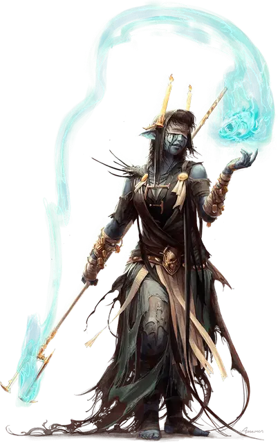

Экзорцист Вестников праха
Heralds of Dust Exorcist
Маленький или Средний Гуманоид

Класс Доспеха 13 (16 с доспехом мага)
Хиты 112 (15к8 + 45)
Скорость 30 футов
| мод | спас | ||
|---|---|---|---|
| СИЛ | 8 | −1 | −1 |
| ЛОВ | 16 | +3 | +3 |
| ТЕЛ | 16 | +3 | +3 |
| мод | спас | ||
|---|---|---|---|
| ИНТ | 17 | +3 | +6 |
| МДР | 14 | +2 | +5 |
| ХАР | 11 | +0 | +3 |
Навыки Восприятие +5, Магия +6, Религия +5
Сопротивление урону некротическая энергия
Иммунитет к состояниям испуг, очарование
Чувства истинное зрение 60 футов, пассивное Восприятие 15
Языки Общий плюс три языка
Опасность 6 (2300 опыта)
Бонус мастерства +3
Особенности
Нетленный сосуд. Экзорцист не может быть одержим Небожителями, Исчадиями или Нежитью
Действия
Мультиатака. Экзорцист совершает две атаки Могильной вспышкой.
Могильная вспышка. . Рукопашная и Дальнобойная атака заклинанием: +6 к попаданию, досягаемость 5 футов или дистанция 120 футов ,одна цель. Попадание: 19 (3к10 + 3) урона некротической энергией или урона излучением (на выбор экзорциста).
Принятие сущности (перезарядка 5-6). Экзорцист приоткрывает завесу смерти для существа, которое он может видеть в пределах 60 футов, открывая цель для злонамеренных сущностей. Цель должна совершить спасбросок Сл Харизмы 14. При провале получая 36 (8к8) урона психической энергией и становясь недееспособной на 1 минуту, в течение которой её рвёт и она бессвязно бормочет чужим голосом. При успехе цель получает только половину этого урона. Недееспособная цель может повторять спасбросок в конце каждого своего хода, оканчивая на себе действие эффекта в случае успеха.
Использование заклинаний. Экзорцист накладывает одно из следующих заклинаний, не нуждаясь в материальных компонентах, используя Интеллект в качестве базовой характеристики (Сл спасброска заклинания 14, +6 к попаданию атаки заклинанием):
• Неограниченно: обнаружение зла и добра [detect evil and good], доспехи мага [mage armor] (только на себя), волшебная рука [mage hand]
• 2/день каждое: защита от зла и добра [protection from evil and good], снятие проклятия [remove curse], разговор с мёртвыми [speak with dead]
• 1/день каждое: изгнание [banishment], рассеивание зла и добра [dispel evil and good]
Описание
Бесстрашные перед лицом смерти, экзорцисты Вестников праха очищают несчастных существ и места упокоения, от поселившихся в них привидений, спектров и других вредоносных сущностей, препятствующих погребению мертвых или подвергающих опасности уже упокоенных. Хотя большинство экзорцистов Вестников праха проводят свои операции в Морге, многие откликаются на призывы со всего Сигила и планам за его пределами.
Причуды нежити затрудняют предугадывание поведения духов. Тем не менее, экзорцисты хорошо подготовлены к своей работе. Опираясь на опыт общения с привидениями и им подобным, экзорцисты направляют силы смерти, чтобы сохранить живых, общаться с мертвыми и загонять злых духов обратно в их могилы. Они также могут выстреливать разрядами некротической или лучистой энергии из своих посохов, отбрасывая от себя сверхъестественных существ.
Чувства экзорциста проникают сквозь завесу смерти, чтобы ощутить блуждающих призраков на Эфирном плане, а также теневых демонов, привидений и других бестелесных сущностей, скрывающихся в покровах тьмы. С помощью краткого песнопения экзорцист может изгнать вредную сущность из одержимого существа — или сделать это существо уязвимым для урона в его духовном обитании.